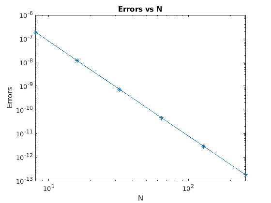

clear all
close all
a = 0; b = 1;
A = 1; B = 0.5;
k = sqrt(1 - (B/A)^2);
f = @(x) A*(sqrt(1 - k^2*(sin(x)).^2));
Tex = 0.8866251235367069482;
n = [8,16,32,64,128,256];
c = length(n);
Error = [];
for i = 1:c
S= simpson(a,b,f,n(i));
error = abs(S-Tex);
Error = [Error,error];
end
Table = table(n(:),Error(:),'VariableNames',{'N','Error'})
loglog(n,Error,'-*'); xlim('auto');
title('Errors vs N');
xlabel('N'); ylabel('Errors');
p = polyfit(log(n),log(Error),1); p(1)
fprintf('Hence order of convergence is 4\n');
function [S] = simpson(a,b,f,n)
h = (b-a)/n;
xe = linspace(a,b,n+1);
xc = xe(1:end-1) + h/2;
fe = f(xe);
fc = f(xc);
M = h*sum(fc);
T = (h/2)*(fe(1) + 2*sum(fe(2:end-1)) + fe(end));
S = (T + 2*M)/3;
end
Table =
6×2 table
N Error
___ __________
8 1.8594e-07
16 1.1632e-08
32 7.2718e-10
64 4.5451e-11
128 2.8406e-12
256 1.7719e-13
ans =
-4.0001
Hence order of convergence is 4
